|
v1.3.19
|
Loading...
Searching...
No Matches
|
v1.3.19
|
| Dependencies | None |
|---|---|
| CMakeLists.txt | set( PLUGINS "photosynthesis" ) |
| Header File | #include "PhotosynthesisModel.h" |
| Class | PhotosynthesisModel |
| Constructors |
|---|
| PhotosynthesisModel( helios::Context* ) |
| Primitive Data Label | Symbol | Units | Data Type | Description | Available Plug-ins | Default Value |
|---|---|---|---|---|---|---|
| radiation_flux_PAR | 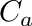 | W/m2 | float | Radiative flux in PAR band. NOTE: this is automatically converted to units of photon flux density, which are the units used in the photosynthesis model. | Can be computed by RadiationModel plug-in. | 0 |
| temperature |  | Kelvin | float | Primitive surface temperature. | Can be computed by EnergyBalanceModel plug-in. | 300 K |
| air_CO2 |  |  mol CO2/mol air mol CO2/mol air | float | CO2 concentration of air outside of primitive boundary-layer. | N/A | 390 mol/mol |
| moisture_conductance |  | mol air/m2-s | float | Conductance to moisture between sub-stomatal cells and leaf surface (i.e., stomatal conductance). | Can be computed by StomatalConductanceModel plug-in. | 0.25 mol/m2-s |
| boundarylayer_conductance** |  | mol air/m2-s | float | Conductance to heat between leaf surface and outside of the boundary-layer (i.e., boundary-layer conductance). | Can be computed by BLConductanceModel plug-in, or by EnergyBalanceModel plug-in if optional output primitive data "boundarylayer_conductance_out" is enabled. | 1.0 mol/m2-s |
| twosided_flag | N/A | N/A | uint | Flag indicating the number of primitive faces with heat transfer (twosided_flag = 0 for one-sided heat transfer; twosided_flag = 1 for two-sided heat transfer). | N/A | 1 |
| stomatal_sidedness |  | unitless | float | Ratio of stomatal density on the upper leaf surface to the sum of the stomatal density on upper and lower leaf surfaces. Note: if "twosided_flag" is equal to 0, stomatal_sidedness will be automatically set to 0. | N/A | 0 |
**The photosynthesis model will also check for primitive data "boundarylayer_conductance_out" if "boundarylayer_conductance" does not exist. If you are using the energy balance model to calculate the boundary-layer conductance, you should enable optional output primitive data "boundarylayer_conductance_out" so that other plug-ins can use it.
| Primitive Data Label | Symbol | Units | Data Type | Description |
|---|---|---|---|---|
| net_photosynthesis |  | mol CO2/m2-sec | float | Net rate of carbon transfer per unit one-sided area. |
| Primitive Data Label | Symbol | Units | Data Type | Description |
|---|---|---|---|---|
| Ci |  | mol CO2/mol | float | Intercellular CO2 concentration. |
| Gamma_CO2 | mol CO2/mol | float | Photosynthetic CO2 compensation point (including "dark respiration"). | |
| limitation_state | N/A | N/A | int | Photosynthesis limitation state. limitation_state=0 if photosynthesis is Rubisco-limited, limitation_state=1 if photosynthesis is electron transport limited. |
The photosynthesis plug-in implements two types of models: the biochemical model of Farquhar, von Caemmerer, and Berry (1980), and an empirical model similar to that of Johnson (2010), which are described separately below.
By default, the plug-in uses the biochemical model. The model can either be set explicitly, as illustrated in the code below, or the model type will be inferred based on the model coefficients that are set (see descriptions below).
The model of Farquhar, von Caemmerer, and Berry (1980) is a biochemical model of photosynthesis. The form used here predicts photosynthetic production as a function of photoshynthetically active radiation flux, ambient CO2 concentration, and stomatal conductance, which may itself provide responses to a number of additional environmental variables.
The implementation used here calculates the net rate of CO2 exchange as
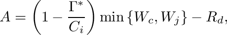
where
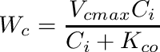
is the rate limited by Rubisco, with
![\[K_{co}=K_c\left(1+\frac{O}{K_O}\right),\]](form_100.png)
where is oxygen concentration.
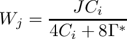
is the rate limited by RuBP regeneration.
The light response of  , the potential electron transport rate, can be described as a rectangular hyperbola with 1 shape parameter, or non-rectangular hyperbola with 2 shape parameters. The rectangular hyperbola takes the form
, the potential electron transport rate, can be described as a rectangular hyperbola with 1 shape parameter, or non-rectangular hyperbola with 2 shape parameters. The rectangular hyperbola takes the form
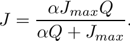
where is the photosynthetically active absorbed radiation flux ( ), 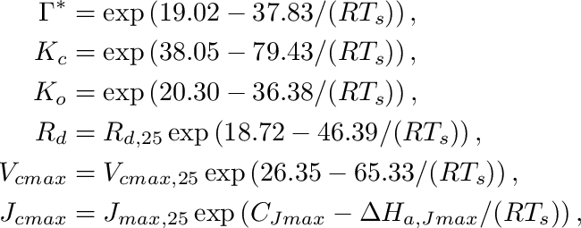 is the temperature-dependent maximum potential electron transport rate ( ), and is the intrinsic quantum efficiency of electron transport (  ) which defines the initial slope of the light response, determines its resulting shape in the rectangular hyperbolic form, and is thought to be relatively conserved around 0.5. The non-rectangular hyperbola takes the form
) which defines the initial slope of the light response, determines its resulting shape in the rectangular hyperbolic form, and is thought to be relatively conserved around 0.5. The non-rectangular hyperbola takes the form
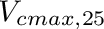
where  is an additional parameter (unitless) that shapes the light response curve beyond its initial slope. When approaches zero, the two forms become equivalent. In Photosynthesis Plugin, the rectangular form will be assumed unless is specified by the user.
is an additional parameter (unitless) that shapes the light response curve beyond its initial slope. When approaches zero, the two forms become equivalent. In Photosynthesis Plugin, the rectangular form will be assumed unless is specified by the user.
The intercellular CO2 concentration is determined from the relation
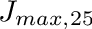
which is solved numerically using the Secant method, since is a complex nonlinear function of which prevents an analytical solution for . The 0.75 factor comes from the fact that diffusion of CO2 in air is slower than that of water vapor (see Eq. 7.33 of Campbell and Norman).
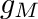 is the conductance to moisture transfer between the leaf interior and just outside of the leaf boundary-layer, and is calculated as
![$g_M = 1.08g_Hg_S\left[\dfrac{\zeta}{1.08g_H+g_S\zeta}+\dfrac{(1-\zeta)}{1.08g_H+g_S(1-\zeta)}\right]$](form_78.png) ,
,
where is the boundary-layer conductance to heat, and 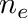 gives the boundary-layer conductance to moisture considering the differences in diffusivity between water vapor and heat.  is the number of primitive faces, which is determined by the value of primitive data "twosided_flag" (twosided_flag=0 is single-sided and
is the number of primitive faces, which is determined by the value of primitive data "twosided_flag" (twosided_flag=0 is single-sided and  , twosided_flag=1 is two-sided and 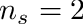).
, twosided_flag=1 is two-sided and 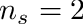).
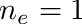
is the stomatal sidedness, which is the ratio of the stomatal density of the upper leaf surface to the sum of the upper and lower leaf surface densities, which is set by the primitive data value "stomatal_sidedness". For leaves, 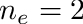 corresponds to hypostomatous leaves (stomata on one side), and 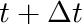 to amphistomatous leaves (stomata equally on both sides). It is important to note that if , then the value of will be overridden and set to 0.
Two different temperature response functions are commonly used in photosynthetic modeling and supported in the Photosynthesis Plugin. One is an Arrhenius equation, which is exponentially increasing with no decline in the region of use. The other is a modified Arrhenius equation with a peak or temperature optimum, beyond which there is a decline in the value of the function, representing a denaturing of an enzyme and subsequent reduction of its activity.
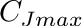
In this form, the model is conveniently parameterized by the commonly used standard reference rate at 25 C, , as well as the energy of activation,  of the Arrhenius equation, but also by the observable temperature optimum, 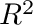 and one additional fitted parameter, the energy of deactivation, 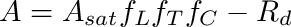, related to the rate of decline from the optimum.
of the Arrhenius equation, but also by the observable temperature optimum, 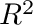 and one additional fitted parameter, the energy of deactivation, 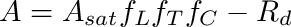, related to the rate of decline from the optimum.
As  , then the peaked form approaches the standard, unpeaked Arrhenius equation, allowing for mathematical backwards compatibility for parameters obtained from fitting to the standard unpeaked form.
, then the peaked form approaches the standard, unpeaked Arrhenius equation, allowing for mathematical backwards compatibility for parameters obtained from fitting to the standard unpeaked form.
In the Photosynthesis Plugin, the Arrhenius form will be assumed as it requires fewer parameters, unless the additional parameters and are specified by the user.
| Parameter | Description | Units |
|---|---|---|
| reference rate at 25 C | ||
| 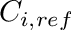 | activation energy (rate of increase) | 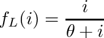 |
| deactivation energy (rate of decrease) | ||
| optimum temperature in Kelvin | 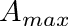 | |
| 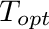 | leaf surface temperature in Kelvin | |
 | ideal gas constant, 0.008314 | 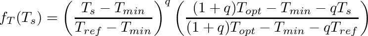 |
Additional temperature parameters that are not typically fit to use the standard Arrhenius form with the parameters obtained by Bernacchi et al. (2001), and are given by the following equations
![\[
\begin{aligned}
\Gamma^* &= 42.60 \cdot \exp \left[ \frac{37.83}{R} \left(\frac{1}{298} - \frac{1}{T_{leaf}} \right) \right] \\
K_c &= 400.3 \cdot \exp \left[ \frac{79.43}{R} \left(\frac{1}{298} - \frac{1}{T_{leaf}} \right) \right] \\
K_o &= 275.1 \cdot \exp \left[ \frac{36.38}{R} \left(\frac{1}{298} - \frac{1}{T_{leaf}} \right) \right] \\
R_d &= R_{d,25} \cdot \exp \left[ \frac{46.39}{R} \left(\frac{1}{298} - \frac{1}{T_{leaf}} \right) \right]
\end{aligned}
\]](form_124.png)
| Variable | Units | Description |
|---|---|---|
| mol/m2-sec. | Photosynthetic radiation energy flux. | |
| Kelvin | Surface temperature. |
 | mol CO2/mol air | Ambient CO2 concentration outside of boundary-layer. |
| mol air/m2-s | Conductance to moisture transfer between inside the leaf and leaf surface (i.e., stomatal conductance). | |
| mol air/m2-s | Conductance to heat transfer between the leaf surface and outside the boundary-layer (i.e., boundary-layer conductance). |
The table below gives example model coefficients obtained for several different species.
| Species | 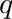 |  |  |  | |  |  |  | 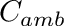 |  |  |  | 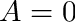 | ||
|---|---|---|---|---|---|---|---|---|---|---|---|---|---|---|---|
| Almond | 72.6 | 144.2 | 6.4 | 0.2 | 0.094 | 0 | 27.3 | 315.3 | 478.4 | 64.1 | 314.9 | 508.4 | 37.1 | 311.3 | 477.9 |
| California Bay | 97.5 | 193 | 3.3 | 0.1 | 0.037 | 0 | 49.1 | 308.6 | 505.8 | 34 | 308.5 | 456.7 | 0.1 | 309.4 | 477.5 |
| Elderberry | 37.7 | 149.7 | 7.3 | 1.3 | 0.202 | 0.472 | 66 | 319.4 | 496 | 24.5 | 314.8 | 492.9 | 33.6 | 314.5 | 497.5 |
| Grape | 74.5 | 180.2 | 7.7 | 1.3 | 0.304 | 0 | 76.1 | 318.8 | 499.8 | 23 | 313.8 | 502.3 | 24 | 314.6 | 496.4 |
| Maple | 96.4 | 168 | 2.7 | 0.1 | 0.077 | 0 | 48.9 | 307.1 | 505 | 8.5 | 304.7 | 476.7 | 32.1 | 308.3 | 471.6 |
| Olive | 75.9 | 170.4 | 8.3 | 1.9 | 0.398 | 0 | 55.4 | 315.2 | 497 | 32.2 | 312.5 | 493.4 | 37.2 | 311.7 | 498.9 |
| Pistachio | 101.8 | 223 | 9.8 | 1.5 | 0.216 | 0.65 | 56.5 | 316.6 | 483.1 | 27.7 | 314.6 | 458.5 | 39.9 | 315.4 | 494.3 |
| Toyon | 52.8 | 142.4 | 6.6 | 0.8 | 0.29 | 0.532 | 42.1 | 315.1 | 483 | 9 | 313 | 486.2 | 14 | 314.8 | 493.8 |
| Walnut | 81.6 | 201.9 | 10.2 | 0.9 | 0.362 | 0 | 85.3 | 316.5 | 500.6 | 41.4 | 308.6 | 308.2 | 21.9 | 310.4 | 434.9 |
| Redbud | 68.5 | 132.4 | 6.6 | 0.8 | 0.41 | 0 | 66.6 | 315.1 | 496 | 41.2 | 313.1 | 474 | 34.3 | 312.8 | 463.2 |
| Apple | 101.08 | 167.03 | – | 3.00 | 0.432 | 0 | 65.33 | – | – | 47.62 | – | – | – | – | – |
| Cherry | 75.65 | 129.06 | – | 2.12 | 0.404 | 0 | 65.33 | – | – | 48.49 | – | – | – | – | – |
| Pear | 107.69 | 176.71 | – | 1.51 | 0.274 | 0 | 65.33 | – | – | 46.04 | – | – | – | – | – |
| Prune | 75.88 | 129.41 | – | 1.65 | 0.402 | 0 | 65.33 | – | – | 48.58 | – | – | – | – | – |
The net photosynthetic rate is described by the equation:
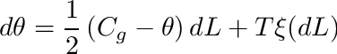
 is the photosynthesis assimilation rate at saturating irradiance and reference temperature ( ) and intercellular CO2 concentration (
is the photosynthesis assimilation rate at saturating irradiance and reference temperature ( ) and intercellular CO2 concentration (  ).
).
The response of photosynthesis to light is given by a simple exponential function, which is defined by only one parameter:
 ,
,
where is the light response curvature.
It is assumed that the maximum CO2 assimilation rate  decreases exponentially about some optimum temperature . The temperature response function is given by:
decreases exponentially about some optimum temperature . The temperature response function is given by:
 ,
,
where 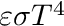 is the minimum temperature at which assimilation occurs, is the temperature at which the maximum assimilation rate occurs, is the reference temperature chosen to define  , and
, and  is a shape parameter.
is a shape parameter.
The "dark" respiration rate  is assumed to increase exponentially with temperature following the Arrhenius equation (and assumed not to vary with ambient CO2 concentration). Thus, the dark respiration rate is calculated simply as
is assumed to increase exponentially with temperature following the Arrhenius equation (and assumed not to vary with ambient CO2 concentration). Thus, the dark respiration rate is calculated simply as
,
where and 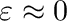 are parameters, and temperature is in Kelvin.
We assume that the maximum assimilation rate varies linearly with intercellular CO2 concentration over the range of expected concentrations, and is zero at zero CO2. Thus, the response function is simply
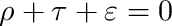,
where is intercellular CO2 concentration ( mol CO2/mol air).
The intercellular CO2 concentration is estimated as a function of the boundary-layer conductance, stomatal conductance, and ambient CO2 concentration outside of the primitive boundary-layer. The rate of transport of CO2 to the leaf (i.e., assimilation rate) is given by
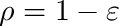,
where is the conductance to moisture from the sub-stomatal cells to outside of the boundary-layer. The 0.75 factor comes from the fact that diffusion of CO2 in air is slower than that of water vapor (see Eq. 7.33 of Campbell and Norman).
Since is dependent on and vice-versa, an iterative solution is required for .
| Variable | Units | Description |
|---|---|---|
| 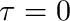 | W/m2 | Photosynthetic radiation energy flux. |
| Kelvin | Surface temperature. |
| 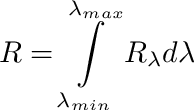 | mol CO2/mol air | Ambient CO2 concentration outside of boundary-layer. |
| 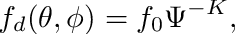 | mol air/m2-s | Boundary-layer conductance. |
| mol air/m2-s | Stomatal conductance. |
| Parameter | Units | Description |
|---|---|---|
 | mol CO2/m2-sec | Assimilation rate at saturating irradiance and reference temperature and intercellular CO2 concentration. |
| W/m2 | Shape parameter for response to light. |
| Kelvin | Minimum temperature at which assimilation occurs. | |
| Kelvin | Temperature at which maximum assimilation rate occurs. | |
| unitless | Temperature response shape function. |
| mol K1/2/m2-s | Pre-exponential factor for respiration temperature response. |
| 1/Kelvin | Respiration temperature response rate. | |
| 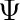 | unitless | CO2 response rate. |
The response of the assimilation rate to light is obtained from gas exchange measurements at reference temperature ( ) and CO2 ( ) in which the irradiance is varied across some range. However, one important detail is that the dark respiration rate should be removed such that 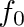 in the dark (see plot below). This can be done by measuring the net CO2 flux starting in the dark, then subtracting the dark flux from the total flux for each subsequent light level.

The response of the assimilation rate to temperature is obtained using gas exchange measurements at saturating light levels and the reference CO2 concentration. The temperature is varied across some range, and the assimilation rate is measured. It is assumed that the optimum temperature is the temperature corresponding to the maximum measured assimilation rate. The model is fit to the data to determine and .

The response of the dark respiration to temperature is obtained using gas exchange measurements in the dark. The leaf is first acclimated to the dark chamber, then leaf temperature is varied across some range. The model is then fit to the data to determine parameters.

The response of the assimilation rate is obtained using gas exchange measurements at saturating light levels and the reference temperature , but with varying external CO2 concentration (which produces varying intercellular CO2).